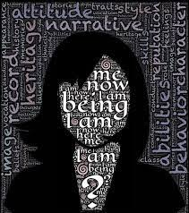
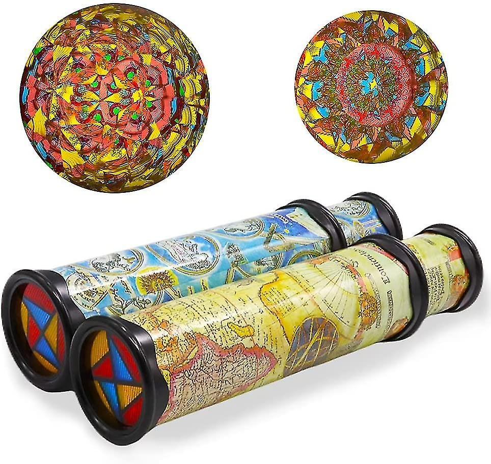
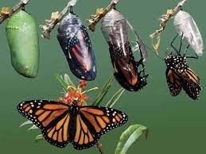
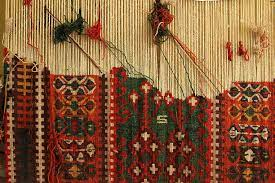
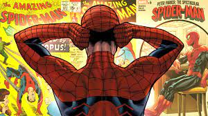

The journey of self-discovery and understanding one's identity is a profound and intricate process. This visual essay delves into the intricate relationship between our sense of self and the perceptions of others, exploring how these interactions shape our identity, the stories we tell, and the possibilities of our future selves.
The path to knowing oneself begins with introspection. A mirror becomes a metaphor, reflecting not just the physical image, but the deeper layers of thoughts, emotions, and experiences that define who we are. Through self-reflection, we navigate the labyrinth of our inner world, understanding our values, passions, and fears.

In the kaleidoscope of life, every interaction serves as a unique lens through which others perceive us. Just as we have our own inner narrative, those we encounter construct their stories about us based on their experiences, biases, and expectations. It's a dance of perspectives, where the truth lies at the intersection of self-perception and external observation.

Change is the catalyst of growth. Like a caterpillar transforming into a butterfly, we too evolve. The chrysalis represents the cocoon of self-improvement, where intentional actions lead to personal growth. Embracing change requires stepping out of comfort zones and rewriting our own narrative.
Envisioning our future self is like gazing at a horizon that stretches beyond our current reality. It's a collage of aspirations, dreams, and aspirations that inspire us to move forward. Our future self is not predetermined; it is shaped by our choices, ambitions, and the journey we embark upon.


The narratives we weave about ourselves form the tapestry of our identity. Each thread represents a story – our accomplishments, challenges, and values. These stories create a sense of continuity and coherence in our lives, allowing us to make sense of who we are.
The stories of others interweave with our own, creating a complex narrative web. Feedback and perceptions from loved ones, mentors, and even strangers can influence how we view ourselves. Like ripples in a pond, the stories of others create echoes that shape the way we perceive our identity.

Selves: Relationships with Identity is an exploration of the profound interplay between self-discovery, interpersonal dynamics, and the stories that define us. As we navigate the complex landscapes of knowing ourselves and being known by others, we find that our identity is both personal and communal, a masterpiece painted with the brushstrokes of introspection and the colors of human connection.